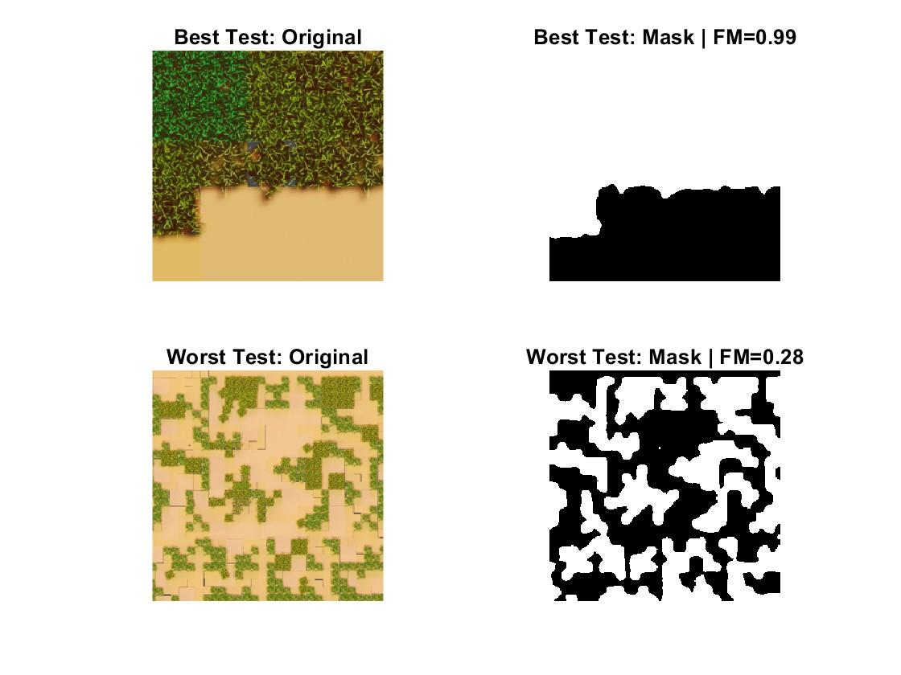
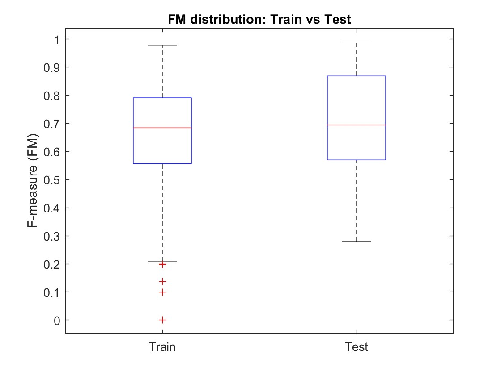
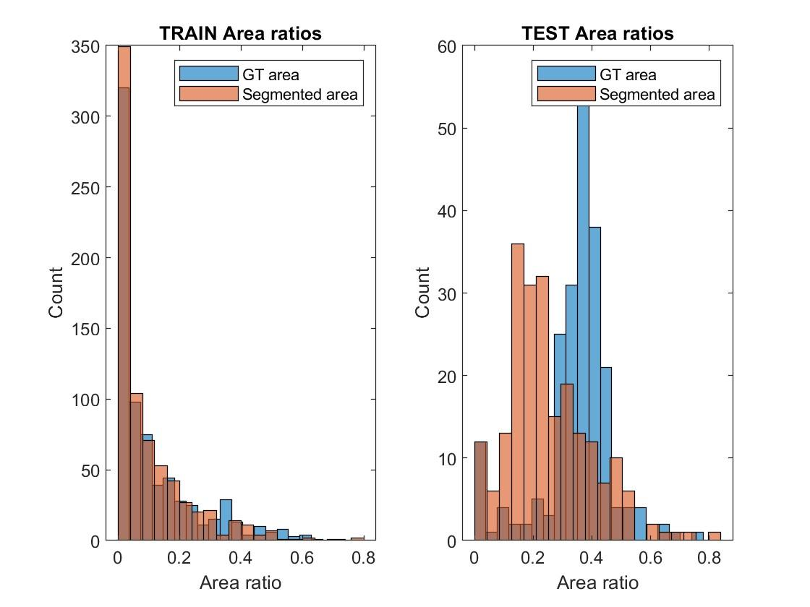
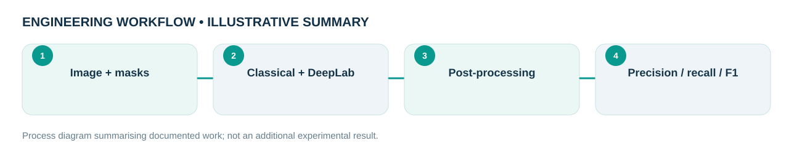

Engineering problem
Which method segments moss on textured walls more reliably: classical image processing or a learned pixel-level segmentation network?
Designed and evaluated wall-surface moss segmentation using a classical image-processing pipeline and a DeepLabv3+ (ResNet-50) semantic segmentation system. Submitted as a two-person academic presentation; the implementation and evaluation were carried out by the portfolio author.
My role and technical ownership
I developed the MATLAB processing and segmentation workflows, compared predictions and documented results for a project submitted with a second named course participant.
How I approached the work
- Implemented a classical pipeline involving green-channel enhancement, CLAHE, median filtering, Canny detection, morphology and Chan–Vese active contour.
- Implemented and evaluated DeepLabv3+ with a ResNet-50 backbone, data augmentation, labeled segmentation masks and class weighting.
- Reviewed best/worst image predictions and precision, recall, F-measure and area-ratio distributions.
What the evidence shows
The presentation reports for the classical pipeline precision (CR) 0.833, recall (CM) 0.902 and F-measure 0.831. Deep-learning train/test distributions are plotted but no independently reproduced global benchmark is available.
Design files, models & results
Original CAD screenshots, simulation plots or project photographs are shown wherever they were available. Select a figure to open the larger file. Workflow graphics are clearly labelled as illustrative.




Limitations and engineering learning
Academic group project. Classical method may over-segment textured backgrounds; deep learning can under-segment low-contrast moss. The supplied slide deck cites 25 training epochs, whereas shared code variants specify different settings; an independently reproduced training run has not been verified.
Engineering takeaway: Classical segmentation over-detects textured regions; deep learning can under-detect difficult vegetation. MATLAB code fragments and slides use differing training-epoch settings, so runtime reproducibility needs a consolidated script and dataset documentation.